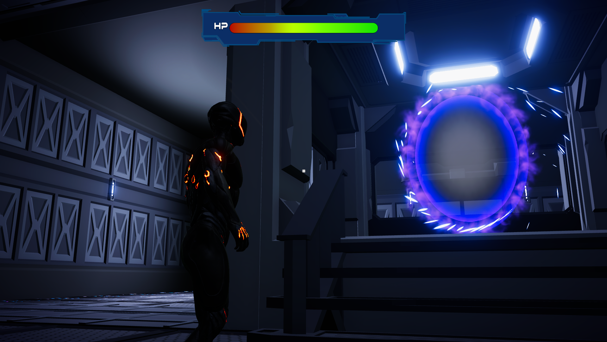
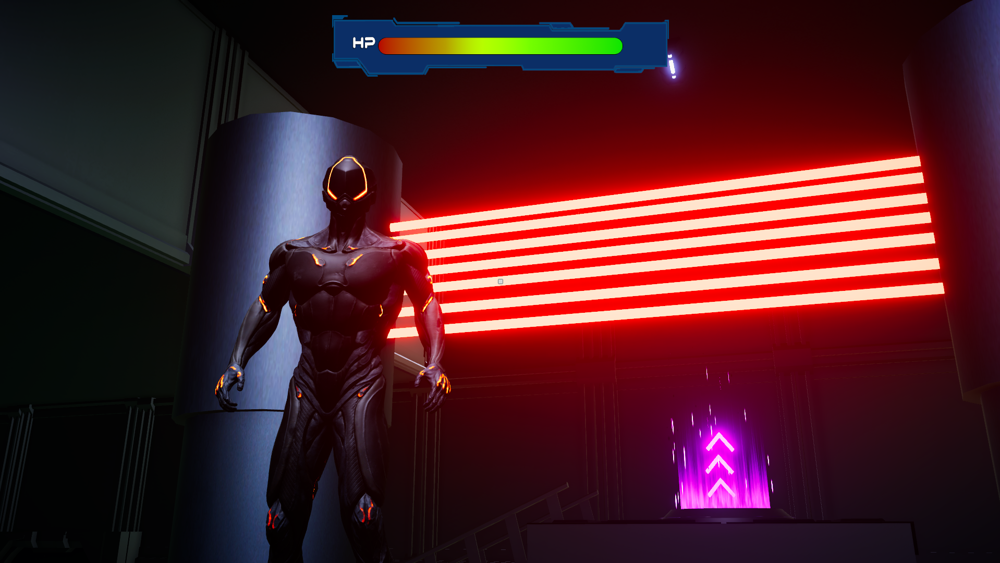

Throughout my learning experience at SAE, I have embarked on numerous creative projects,
one of which is the 3D Model pictured above called "CT-621". This model was the first 3D model I made in Blender.
This model was utilized in another project of mine but unfortunately that project never took off.
Regardless, I am still proud of this model I created and have plans for it in the future.


Another project I had the joy of working on was an end of year game design project.
We were split into groups of 4, each of us given our own roles within the game design. My job was
to be the lead programmer and I was responsible for creating the mechanics behind the game.
The game we decided to make was called Photon Jumper. The game was a 3D puzzle platformer
which focused on a soldier going through training in a space program, and I created the poster featured above
for the game in PhotoShop. Also above are screenshots taken from our game and in them you can see some of
the obstacles that the player had to navigate through.